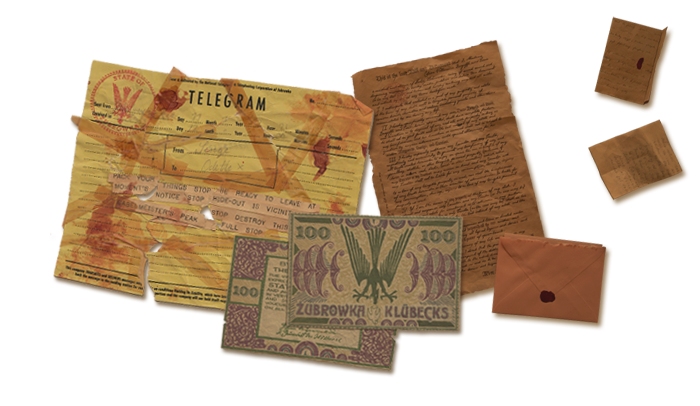
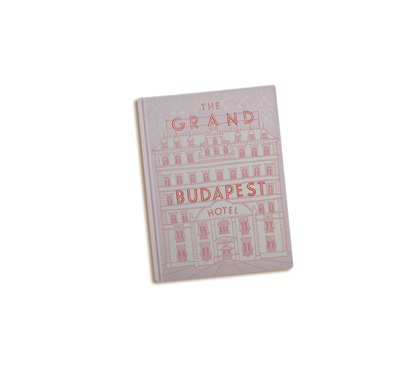
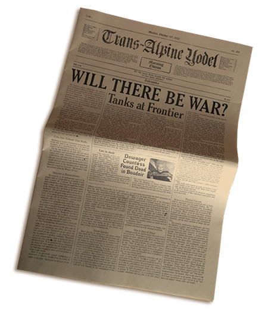

CR: How did you get into working in film?
I worked in advertising for years, at McCann in Reykjavik, Iceland. Around that time I started writing a blog, too, which I began to enjoy much more than art directing. When I spoke to the creative director about moving on, he said he'd been reading it and was wondering if maybe I should do something 'with more emotion' for a while. At the time I was quite taken aback - emotion?! - but he was right, I think, and I left to go to film school in Dublin. It was there that I met Tom Conroy (production designer of The Tudors) and he introduced me to this whole new world of design. I'd had no idea that a graphic designer was so essential to filmmaking. Making graphic props wasn't something I'd ever considered to be a career until then.
CR: Working on this film would seem like a dream job to many - how did you come to be involved?
Yes, it's an absolute dream job and my head still spins when I remember the first call from Wes's producer. It was a shock - I remember trying to sound really professional and calm on the phone, but I was actually doing cartwheels around the room. I'd been drawing some graphics for Laika's new animated feature The Boxtrolls (due out in September), and a designer at the studio had recommended me to Wes (Nelson Lowry, who had designed Mr Fox). He'd tried to give me some warning, I think, by emailing me with the line "Something wicked your way comes..." but to be honest I had no idea what he'd meant, or exactly how wicked it was going to be!
 CR: Can you talk us through the process for creating the various graphic
props in the film? How closely was Wes Anderson involved in this?
Wes is completely involved in every aspect of his filmmaking, and I worked very closely with him and the production designer, Adam Stockhausen, every day. This film was particularly fun, I think, from a graphics point of view, because we were creating this entirely fictional country that Wes had written - the State of Zubrowka. It meant that every little detail had to be made from scratch - flags, banknotes, postage stamps, everything. Adam had already collected a huge amount of reference from 1930s Eastern Europe when I joined them, and I would start each graphic prop by showing Wes a real artefact from the time. I would show him redrafts of designs sometimes 20 times a day. Wes has a very graphic sensibility - that's evident in all his films, of course.
Once the layout of each design had been decided, then it was time to make the prop physically, and make something that will work on set in an actor's hands. I use traditional methods in graphic prop-making wherever possible: a real 1930s typewriter for typewritten documents; a dipping pen and ink and for any handwriting. Pieces have to be aged, too, as nothing should look like it was made in an art department five minutes ago. Madame D's last will and testament took a lot of ageing, for example, as it contained over 600 pieces that were scripted as being some 46 years old. I have some tricks of the trade that I've learnt over the years... mostly involving a big vat of tea and a hair dryer.
CR: It's a very type-rich film, from the hotel itself, to the subtitles, Mendl's, even the prison gates have huge type on them - can you talk us through the major typefaces used and why they were chosen?
We actually used comparatively few typefaces in the movie, as most lettering was created by hand. Wes and Adam had been on location recces all around Eastern Europe and had references of all kinds of hand-made signage from the last 100 years or so. The beautiful thing about period filmmaking is that you're creating graphic design for a time before graphic designers existed, per sé. It was really the craftsmen who were the designers: the blacksmith designed the lettering in the cast iron gates; the glazier sculpted the lettering in the stained glass; the sign-painter drew the lettering for the shopfronts; the printer chose the type blocks for the stationery.
The Grand Budapest Hotel sign itself, up on the roof of the hotel, is my favourite example. It was based on an old steel hotel sign from 1930s Cairo that Wes had picked out. I hand-drew the lettering for our own hotel in the same style, somewhat unevenly, with rather jaunty serifs, and then gave the drawing to our model-makers who sculpted it for the hotel miniature. I remember they corrected the rather wide kerning between the letters A and N, and we asked them to widen it again just like it was in the reference. It's the little idiosyncrasies like this that Wes loves - it's all part of his aesthetic. On the one hand he's a perfectionist; on the other hand he doesn't want anything to look machine-made, or digitally produced in any way.
CR: You spent a winter on-set, what was a typical working day like?
Yes, it was crazy. There was a tremendous amount of graphics in this one, so my script breakdown was as long as my arm. We started in Berlin and then after a month the entire cast and crew moved to a little town on the Polish border called Gorlitz, where we all lived together and shot the movie. Adam had designed the hotel set to fit into the bones of a beautiful old Art Nouveau department store, with 6 floors and balconies, and we set up our offices on the top floor. We could look down over the balcony every day and watch the set come to life, which was pretty special. I spent my day having back and forths with Wes over details in graphics, talking their production through with the supporting graphic designer Liliana Lambriev, and then liaising with the designer, set decorator, propmaster, and art directors to make sure they had everything they needed from us. There's probably more to graphics in film than is immediately apparent. If a character has a notice board in his office, for example, then you have to fill that board with relevant material, all in the right style for both the period and the director's vision. You're not always designing for the camera: much of this work will never be seen by a cinema audience, but still you have to create an atmosphere and a world for the actors to work their magic in. I was talking to Ralph Fiennes one night and he was really appreciative of graphics work in film - he particularly liked the personalised notebook we'd made for his character to keep in his pocket. When we were developing it, he had asked that the pages be lined, rather than blank, as he felt that was more in keeping with Gustave's style. It's that kind of small detail that the camera is just never going to pick up on directly, but goes some small way in helping the scene, for example, in which Ralph is striding through the hotel lobby taking his notes. Every department pays the same amount of attention to detail - costume, set dec, make-up, props - and it all adds up.
CR: The communist-era version of the hotel itself is covered in various signs telling people what to do and where to go, what was the idea there and what were you hoping to achieve with the design of the signs?
Oh my goodness, so many signs in the 1960s hotel lobby! I have to give credit to Liliana for this work, as she took care of nearly all of these. She had three sign-writers from Berlin painting non-stop for a week to get them all done in time for our first day of shoot, as that set was first up. Wes and Adam had seen so many examples of quite officious signage in what had been communist East Germany - don't do this, don't do that, do this but only like that! The signs really added to the claustrophobic feeling of that set, and Wes had asked for them all to be black with simple white hand-painted lettering - based on the style of the old sign at Yorckstrasse subway station in Berlin. 
CR: What was your favourite piece that you designed for the film?
My absolute favourite piece is the book itself that opens the story (above). It's a modern pink hardback with a drawing of the hotel on the front, and the name of the movie as the hotel sign. It's a relatively simple piece, but it's really special having a prop that you made with the movie's name on it like that. I remember Wes had sent me a quick sketch showing his idea for the book, and I really loved being able to help make that work for him. I treasure that piece, actually - we made three for the shoot, in case one got dropped in the snow, and so I brought one home with me.

CR: And the most challenging?
Probably the hotel's local newspaper, the Trans-Alpine Yodel (above), as there were so many issues with so many different stories, and each one had to be typeset with new articles and weather reports and dates. It was the first piece I worked on with Wes when I arrived in Germany, so this was the prop that I cut my teeth on. I really got a feeling for his fastidiousness on this one - we must have gone through almost 40 different page layouts until he was happy to shoot it! I also had to think about the aspect ratios he was shooting, too, as they were different for the different time periods in the movie, and he wanted the newspaper columns to fit nicely within the frame of each of them. Wes wrote all the newspaper articles himself - not just articles to accompany the main headlines, but the surrounding ones too. On screen, you only get a chance to read the headlines, of course, but the stories are so Wes and so funny. I think he had fun with this one.
CR: What are you working on next?
I'm on Sam Mendes and John Logan's new show Penny Dreadful, which is a horror series set in 1891. I really love the Victorian period for graphic design, and the show has a supernatural element, too, so it's a fun one. I've also written some calligraphy for the titles of the new Darren Aronofsky movie Noah, which is really nice work and probably the most ancient period I've worked to so far. I'd like to do something futuristic soon, I think, to take me out of my comfort zone... but you never know what's going to come up, so I just have to wait and see what happens.
An exhibition of Annie Atkins' work on The Grand Budapest Hotel, Annie Atkins: A Brief Survey of Graphic Design from the Empire of Zubrowka (1932-1968), is at the Light House cinema in Dublin until March 24.
To see more of Annie Atkin's work, click here